geom_path() connects the observations in the order in which they appear
in the data. geom_line() connects them in order of the variable on the
x axis. geom_step() creates a stairstep plot, highlighting exactly
when changes occur. The group aesthetic determines which cases are
connected together.
geom_path(mapping = NULL, data = NULL, stat = "identity", position = "identity", ..., lineend = "butt", linejoin = "round", linemitre = 10, arrow = NULL, na.rm = FALSE, show.legend = NA, inherit.aes = TRUE) geom_line(mapping = NULL, data = NULL, stat = "identity", position = "identity", na.rm = FALSE, show.legend = NA, inherit.aes = TRUE, ...) geom_step(mapping = NULL, data = NULL, stat = "identity", position = "identity", direction = "hv", na.rm = FALSE, show.legend = NA, inherit.aes = TRUE, ...)
| mapping | Set of aesthetic mappings created by |
|---|---|
| data | The data to be displayed in this layer. There are three options: If A A |
| stat | The statistical transformation to use on the data for this layer, as a string. |
| position | Position adjustment, either as a string, or the result of a call to a position adjustment function. |
| ... | Other arguments passed on to |
| lineend | Line end style (round, butt, square). |
| linejoin | Line join style (round, mitre, bevel). |
| linemitre | Line mitre limit (number greater than 1). |
| arrow | Arrow specification, as created by |
| na.rm | If |
| show.legend | logical. Should this layer be included in the legends?
|
| inherit.aes | If |
| direction | direction of stairs: 'vh' for vertical then horizontal, or 'hv' for horizontal then vertical. |
An alternative parameterisation is geom_segment(), where each line
corresponds to a single case which provides the start and end coordinates.
geom_path() understands the following aesthetics (required aesthetics are in bold):
x
y
alpha
colour
group
linetype
size
Learn more about setting these aesthetics in vignette("ggplot2-specs").
geom_path(), geom_line(), and geom_step handle NA as follows:
If an NA occurs in the middle of a line, it breaks the line. No warning
is shown, regardless of whether na.rm is TRUE or FALSE.
If an NA occurs at the start or the end of the line and na.rm is FALSE
(default), the NA is removed with a warning.
If an NA occurs at the start or the end of the line and na.rm is TRUE,
the NA is removed silently, without warning.
geom_polygon(): Filled paths (polygons);
geom_segment(): Line segments
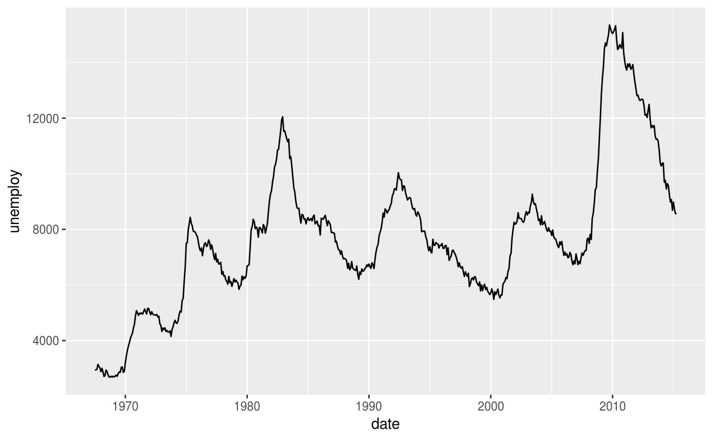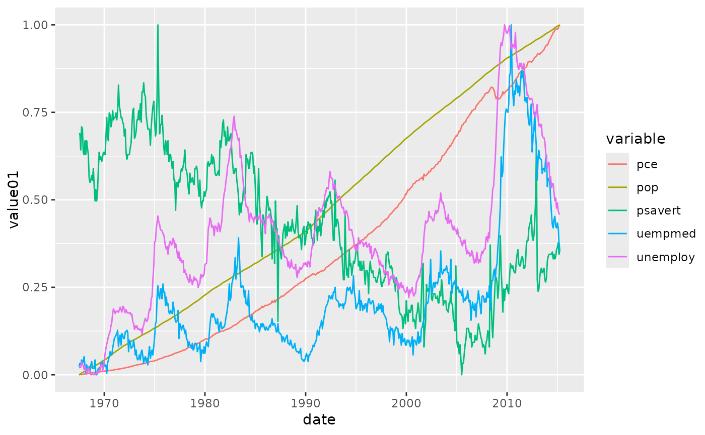# geom_step() is useful when you want to highlight exactly when # the y value changes recent <- economics[economics$date > as.Date("2013-01-01"), ] ggplot(recent, aes(date, unemploy)) + geom_line()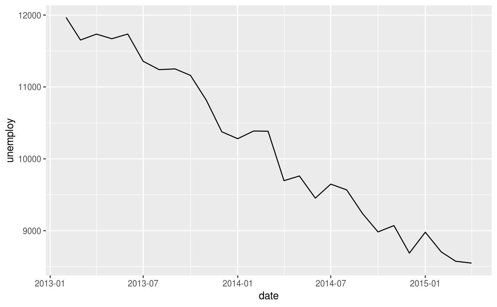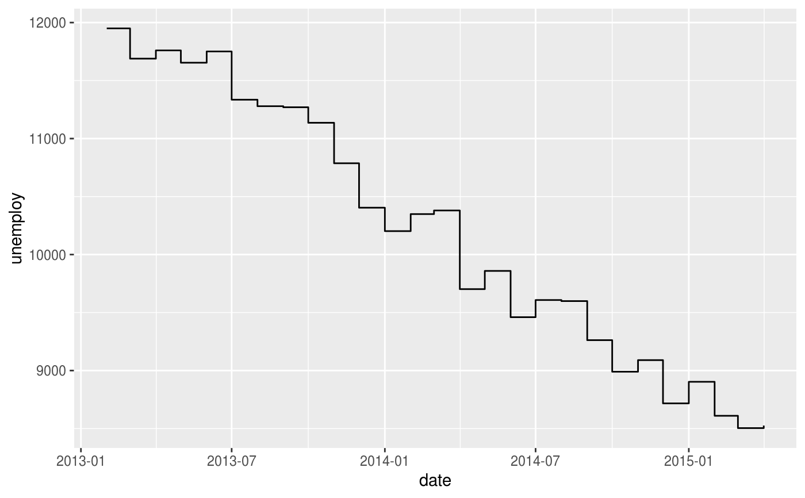# geom_path lets you explore how two variables are related over time, # e.g. unemployment and personal savings rate m <- ggplot(economics, aes(unemploy/pop, psavert)) m + geom_path()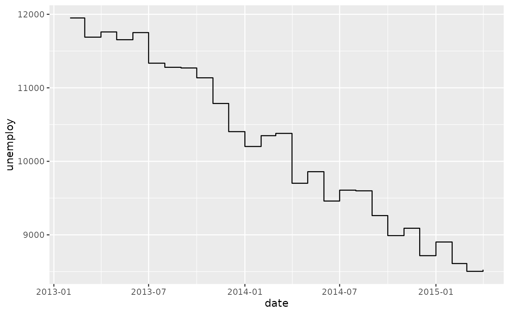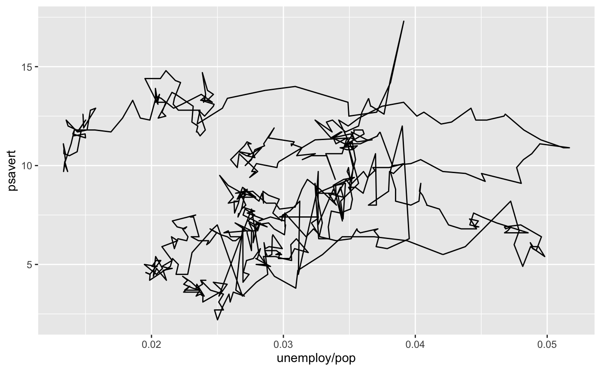# Changing parameters ---------------------------------------------- ggplot(economics, aes(date, unemploy)) + geom_line(colour = "red")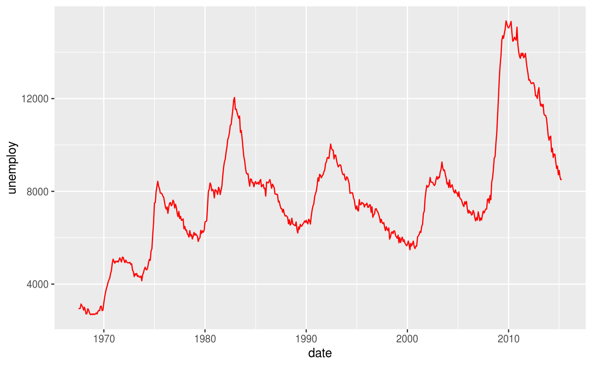# Use the arrow parameter to add an arrow to the line # See ?arrow for more details c <- ggplot(economics, aes(x = date, y = pop)) c + geom_line(arrow = arrow())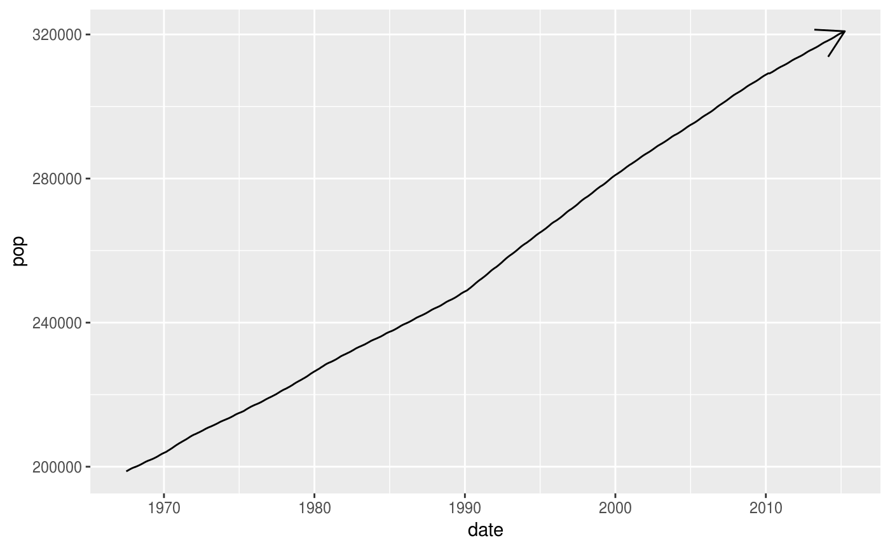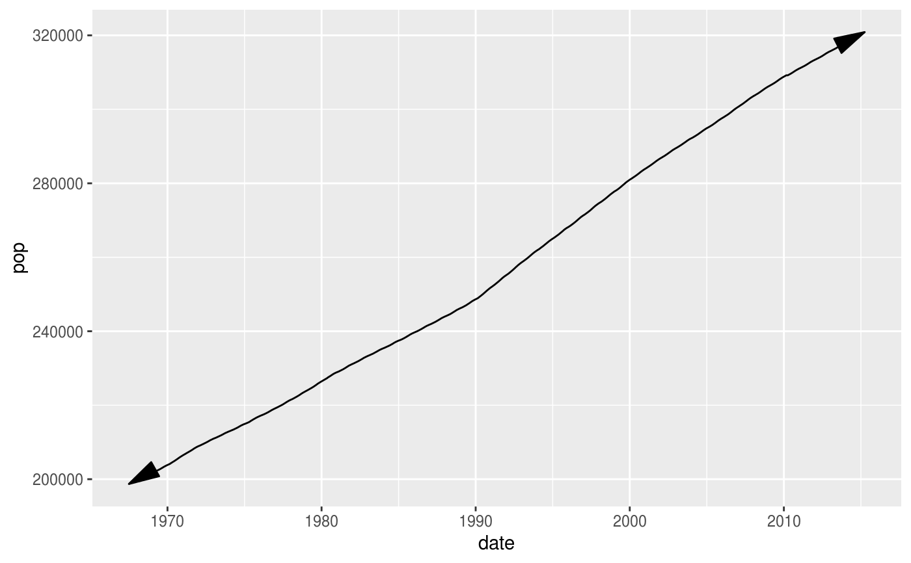# Control line join parameters df <- data.frame(x = 1:3, y = c(4, 1, 9)) base <- ggplot(df, aes(x, y)) base + geom_path(size = 10)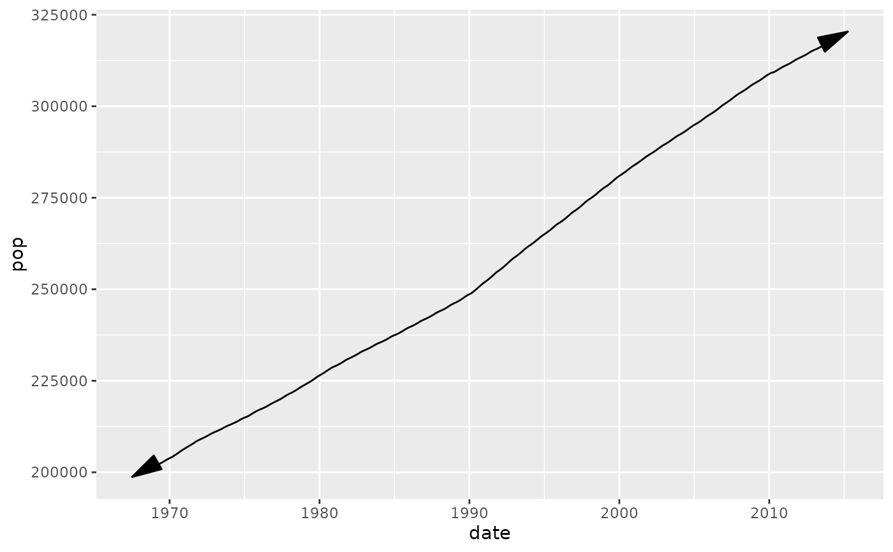base + geom_path(size = 10, lineend = "round")base + geom_path(size = 10, linejoin = "mitre", lineend = "butt")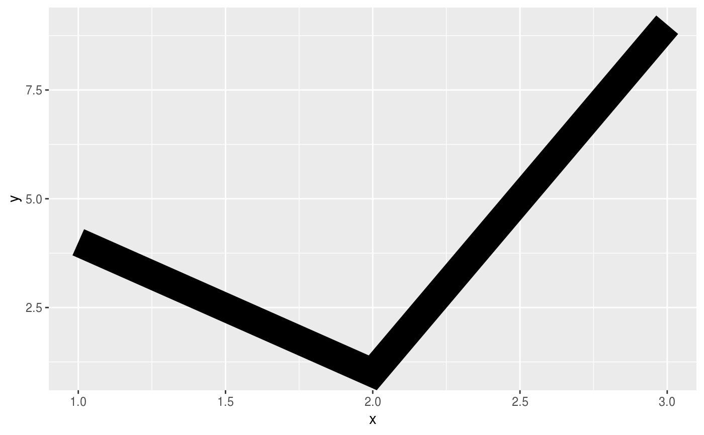# You can use NAs to break the line. df <- data.frame(x = 1:5, y = c(1, 2, NA, 4, 5)) ggplot(df, aes(x, y)) + geom_point() + geom_line()#> Warning: Removed 1 rows containing missing values (geom_point).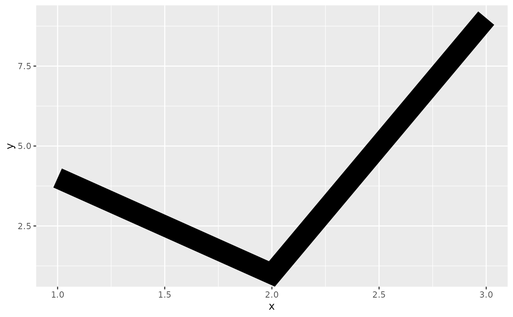# Setting line type vs colour/size # Line type needs to be applied to a line as a whole, so it can # not be used with colour or size that vary across a line x <- seq(0.01, .99, length.out = 100) df <- data.frame( x = rep(x, 2), y = c(qlogis(x), 2 * qlogis(x)), group = rep(c("a","b"), each = 100) ) p <- ggplot(df, aes(x=x, y=y, group=group)) # These work p + geom_line(linetype = 2)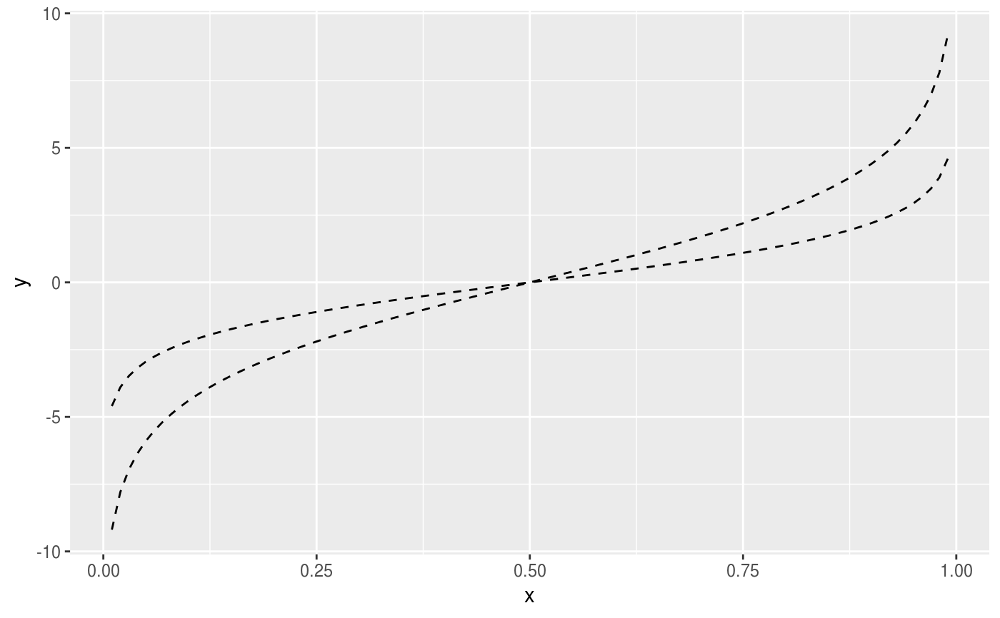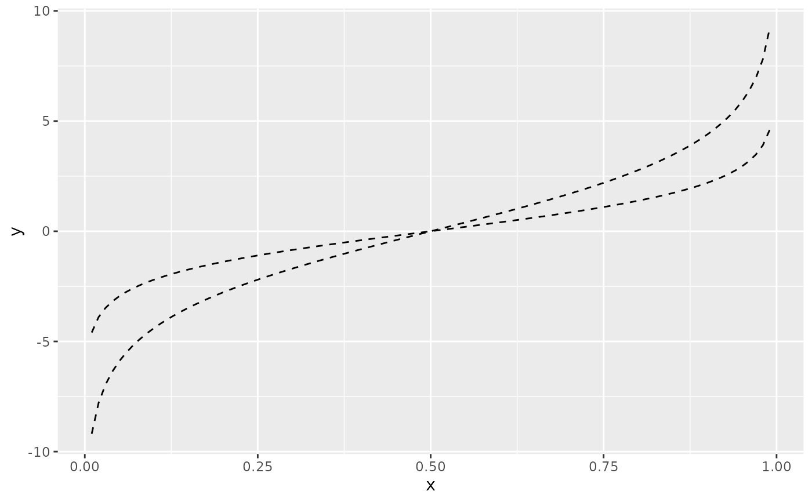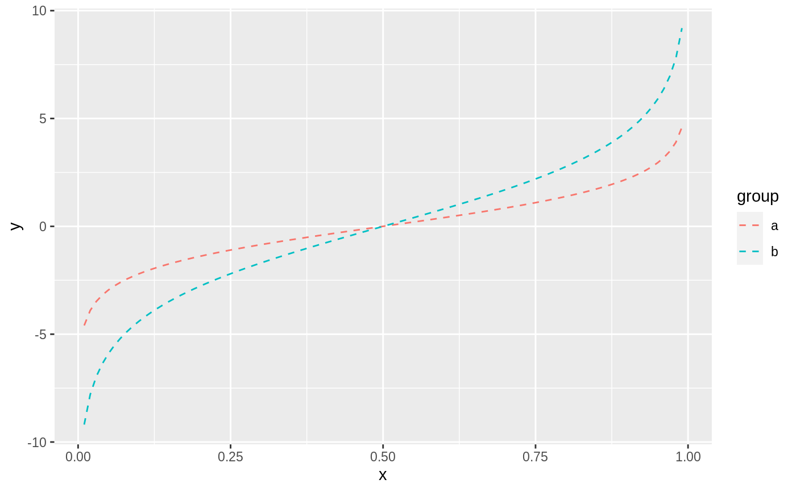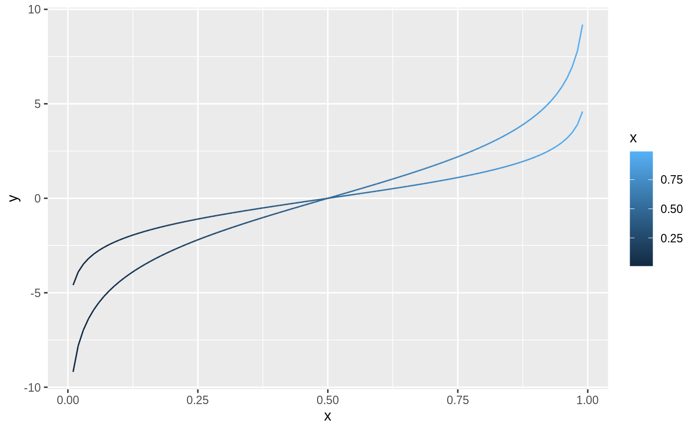